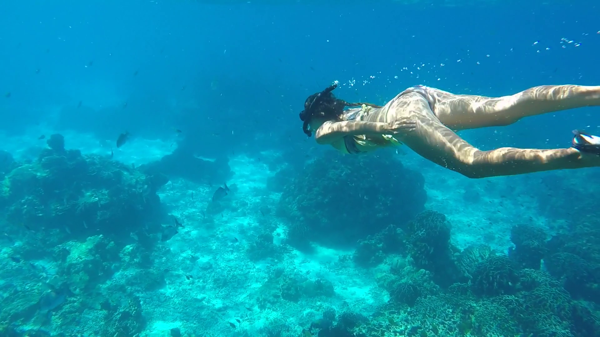
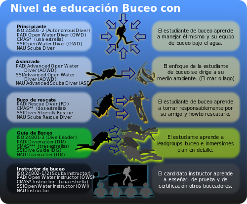
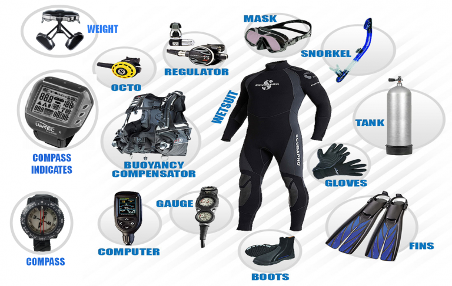

El buceo, también denominado submarinismo y escafandrismo, es el acto por medio del cual el ser humano se sumerge en cuerpos de agua, ya sea el mar, un lago, un río, una cantera inundada o una piscina, con el fin de desarrollar una actividad profesional, recreativa, de investigación científica o militar con o sin ayuda de equipos especiales. Al buceo tradicional (sin aparatos de respiración) se le llama sencillamente buceo, aunque a su modalidad deportiva se le llama apnea o buceo libre. El término submarinismo define con exactitud la práctica del buceo en el mar, que es además, y con creces, el buceo más practicado en todo el mundo. Al buceo practicado en cuevas o galerías inundadas de minas se le llama espeleobuceo y al buceo en lagos de montaña buceo de altura.
El buceo recreativo se practica en 2 modalidades: el buceo libre o en apnea y el buceo autonomo o con
escafandra autonoma.


El equipo necesario para el buceo se divide en equipo ligero (aletas, visor, y tubo respirador o esnórquel)
y equipo autónomo (botella, chaleco hidrostático, regulador con profundímetro y manómetro, y lastre).
Adicionalmente, el equipamiento del buceo autónomo también suele incluir un ordenador de buceo, una boya de
señalización, una linterna, y un pequeño cuchillo, y en función de la temperatura y las corrientes, un
gorro y unos guantes.
